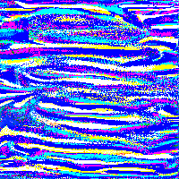

im sorry
the sound of static illuminates my bloodshot eyes and my mind divides as i abyss deeply myself pouring from my crevices reaching into this empty container with the struggle of unearthing my earthly self
o where does it lie? the pixels grind and meld and i reach into what i think to be a mirage but find clot and dirt. doubt rises like a high tide beaching mangled quartz, and i wish i could apologize for who i was and who i might be to you and to all the other selves i have spurned but i cannot know who is listening

arrow_forward there is nothing else to say